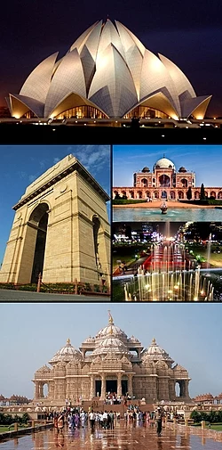

Vacation
Here I Present.
Hello! Welcome to Vacay Brochure.
Destinations
Vacation Descripture
Delhi

Delhi,officially known as the National Capital Territory of Delhi (NCT), is a city and a union territory of India
containing New Delhi, the capital of India.
It is bordered by the state of Haryana on three sides
and by Uttar Pradesh to the east.
The NCT covers an area of 1,484 square kilometres (573 sq mi).
According to the 2011 census, Delhi's city proper population was over 11 million, the second-highest
in India after Mumbai, while the whole NCT's population was about 16.8 million.
Kanpur
Kanpur, historically called Cawnpore, is a metropolis in the state of Uttar Pradesh in India.
The greater metropolis is divided into two districts: the urban district of Kanpur Nagar and the rural district of Kanpur Dehat.
The city is famous for its leather and textile industries.
It is the 12th most populous city and the 11th most populous urban
agglomeration in India.
It is also the second largest city proper and the largest urban agglomeration in Uttar Pradesh.
Kanpur was an important British garrison town until 1947, when India gained independence.
The urban district of Kanpur Nagar serves
as the headquarters of the Kanpur Division, Kanpur Range and Kanpur Zone.
Jamshedpur

Jamshedpur is one of the first planned cities (mainly due to the steel industry established here) of India and most populous
urban agglomeration in the Indian state of Jharkhand.
It was founded by Jamsetji Tata, founder of Tata Groups, and was also
named after him.
Jamshedpur was ranked as the cleanest city of India in 2020 by Swach Survekshan 2020
Jamshedpur ranked as 15th cleanest city in India by Swachh Survekshan 2019 and was 7th cleanest city of India in 2010.
The city also ranked as 2nd in India in terms of 'Quality of Life'[10] and 84th fastest growing city of world according to City Mayors Foundation.